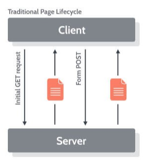
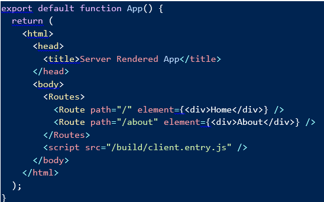

Server-Side Rendering
SPA
is a web application or a website that uses only HTML-document as a wrapper for all web pages.

Traditional scheme
HTML layout has been generated at the server and sent with the response together
The typical server's response for the SPA
Advantages
- Native-like applications
- Throughput economy
- Service Worker cache
Limitations
- Large weight of HTML/CSS/JS
- SEO – troubles
- Hard work at the client side
HTML Meta Tags for SSR
import Helmet from "react-helmet";
import MetaTags from 'react-meta-tags';
async function createTags(id) {
const { title, description, link, image }
= await gettingTheDataFromFirestore(id);
return `
`;
}
Dynamic imports
import dynamic from 'next/dynamic'
const Sample = dynamic(() => import('../Sample.js'))
const Demo = () => {
return (
)
}
Data storage
React Server Components
Debugging
Routing
Next.JS with the core features
- Minimal config
- Pre-rendering pages
- Built-in CSS support
- Fast refresh
- Image Optimization
- Typescript support
- Analytics
- Automatic Code Splitting
- Dynamic Components
- Static Exports